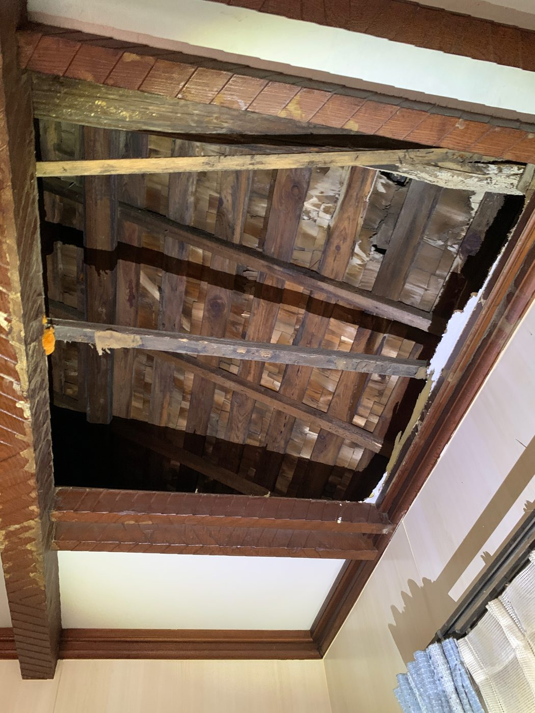
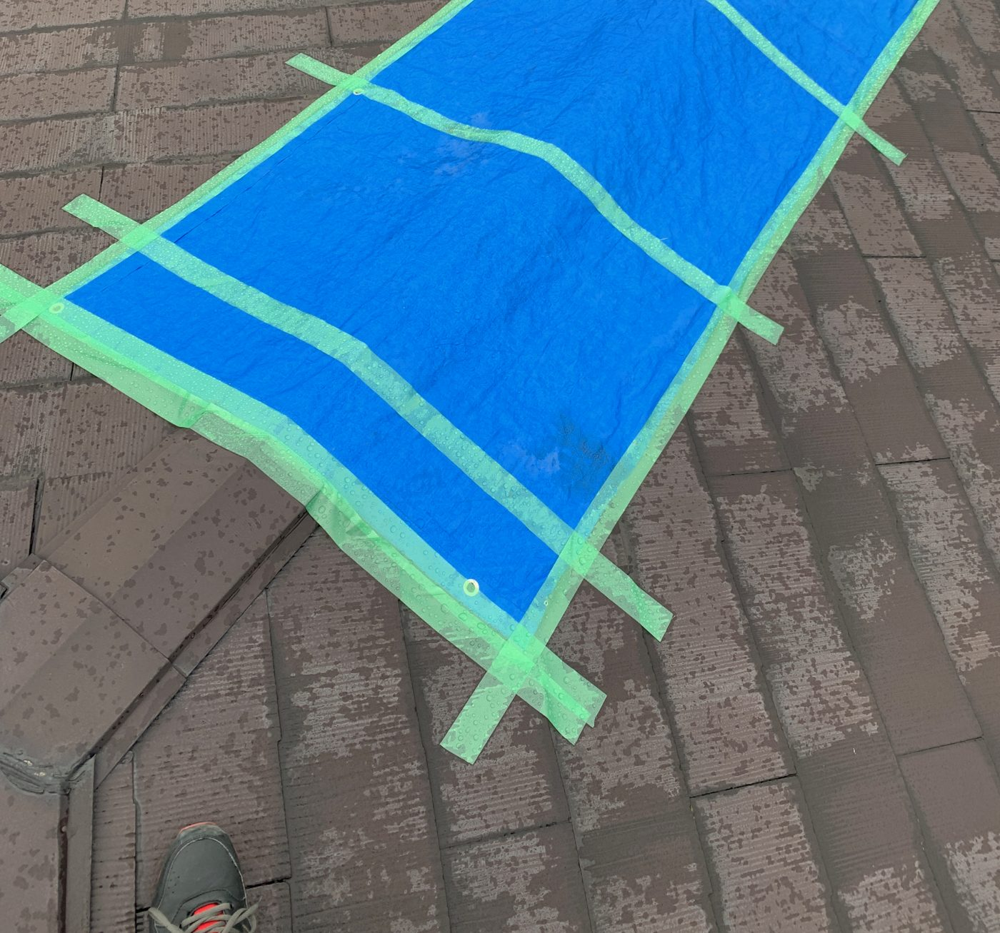
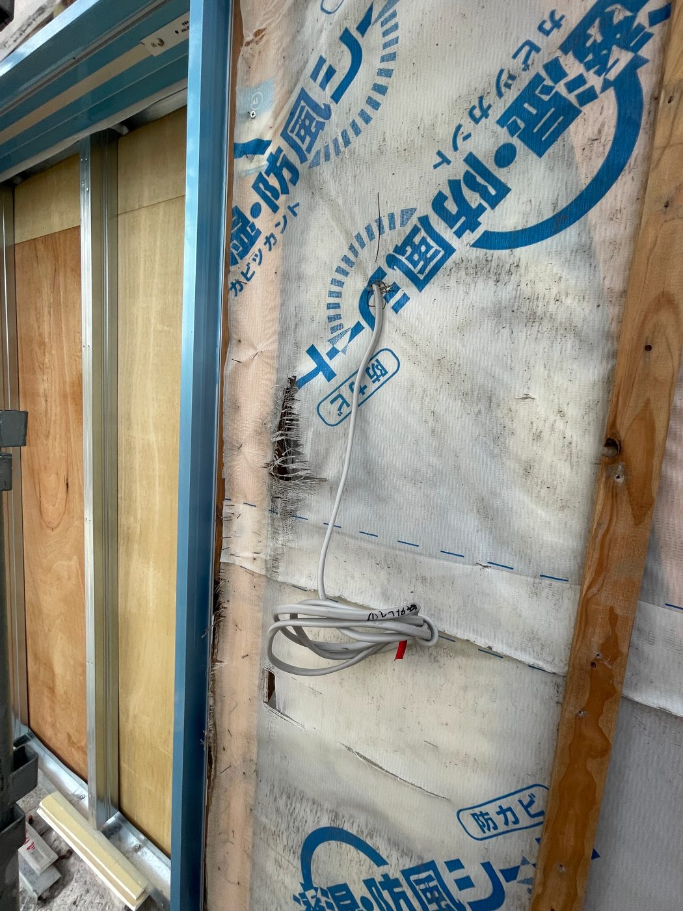
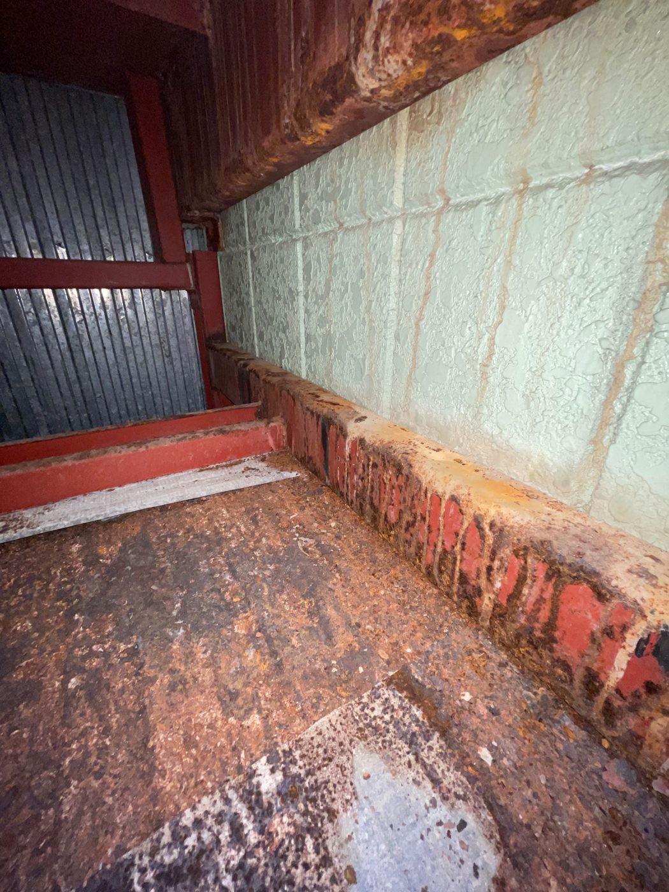
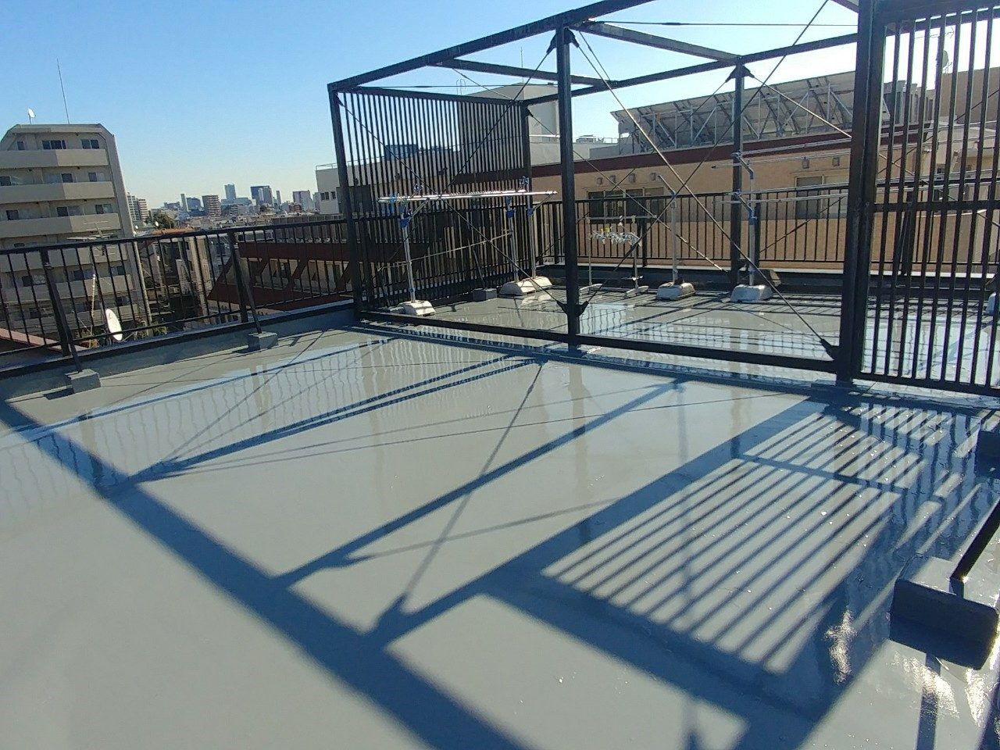

雨漏り修理・屋根修理（施工＝提携職人）｜確定した金額から増やしません
1つでも当てはまったら、スマホで写真を撮って送ってください。
「◯円から」と安く見せて現地で増やす——あの売り方をしないための、段階ごとの価格です。
本工事を契約させるための入口ではありません。レポートを持って他社と相見積もりして頂いて構いません——それでも選ばれる自信があるから、こう書いています。
| 工事 | 総額の目安（税込） |
|---|---|
| コーキング・板金などの部分補修 | 3〜30万円 |
| ベランダ・屋上の防水 | 15〜70万円 |
※雨漏りは原因が複数のことが多く、写真だけで本工事の金額は決められません（決められると言う方が嘘になります）。散水調査など詳細調査が必要な場合は、先に定額をご提示してから行います。本工事の確定総額は調査結果をご説明した後に書面でご提示し、以後増額しません。税込500万円以上の大規模工事は建設業許可のある専門業者をご紹介します。
最短で当日に応急対応（混雑状況によります）。
分かる範囲の概算と「詳しい調査が必要かどうか」を正直にご返信します。
まず雨の侵入を止め、原因を調べて写真レポートにします。金額はこの作業の前に確定します。
書面でご提示し、クーリングオフ（8日間）のご案内を先にお渡しします。ここで断ってもOK——レポートはお手元に残り、その後の営業連絡はしません。
提携職人が施工し、施工前後の写真レポートをお渡しします。確定総額から増やしません。
「点検商法が嫌い」から始まった診断室です。
写真＝代表の施工実績（令和5年・無加工）。現在の施工は代表＋提携職人で行います。





写真を送るだけで、対応可否と概算をご返信します。
※ご相談は無料ですが、補修・工事のご提案（営業）を含みます。
📞 電話・💬 LINE窓口は近日開設です。
開設までは Googleマップで「さいたま雨漏り診断室」をご確認ください。